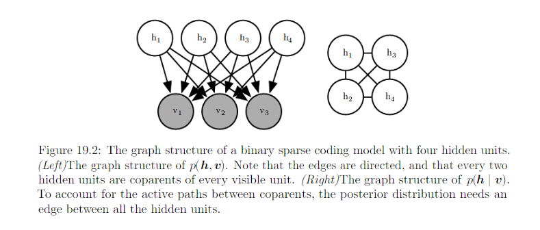
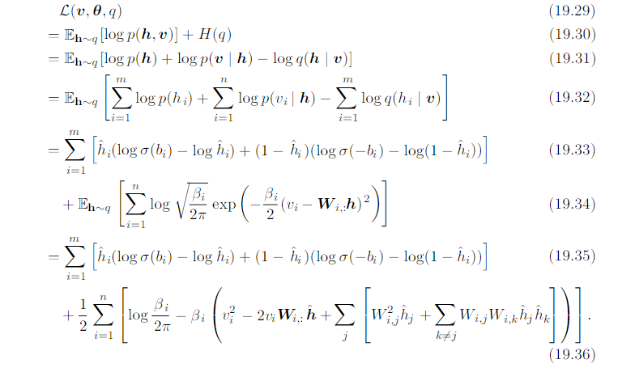
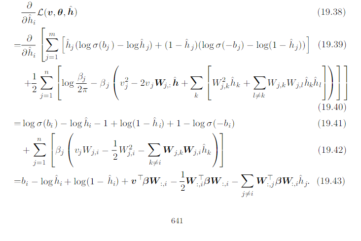
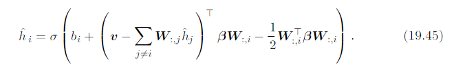
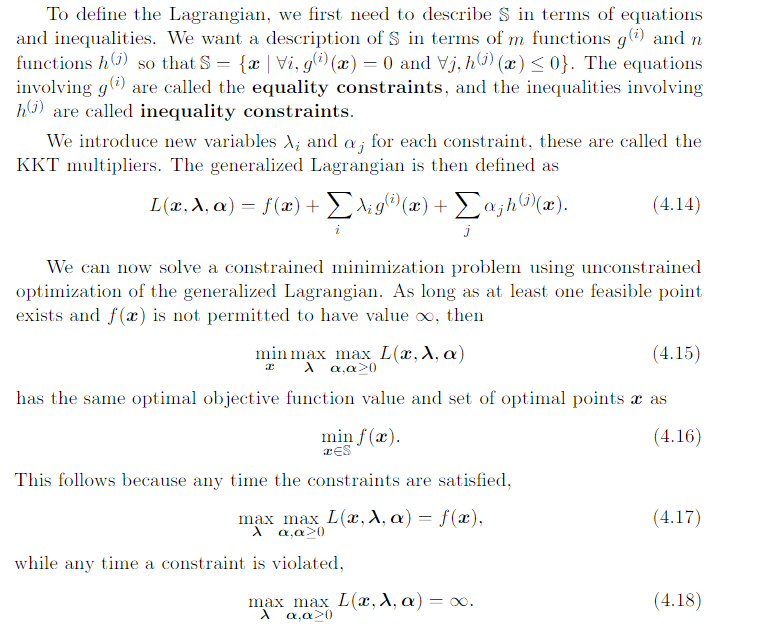

19.4 Variational Inference and Learning¶
Core idea of variational learning: We can maximize L over a restricted family of distribution q.
Common restriction:
Called mean field approach.
We do not need to specify a sepecific parametric form of q. We specify how it should factorize, then optimization problem determines the optimal probability distribution within those factorization constraints.
- For discrete latent variables: use traditional optimization techniques to optimize a finite number of variables describing the q distribution.
- For continous latent variables: use a branch of mathmatics called caculus of variations to perform optimization over a space of functions and actually determine which function should be used to represent q.
Because \(L(v, \theta, q) = \log p(v) - KL[q(h) || p(h|v)]\), maximize L => minimize KL[q(h) || p(h|v)]. We are fitting q to p.
- When we use maximum likehood learning to fit a model to data, we minimize \(D_{KL}(p_{model}|| p_{data})\), which encourage the model to have high probability everywhere that the data has high probability.
- Optimize based inference procedure encourage q to have low probability everywhere the true posterior has how probability.
Review:

In the inference optimization problem, we choose to use \(D_{KL}(q(h|v) || p(h|v))\) for computational reason.
19.4.1 Discrete Latent Variables¶
We define a distribution q, typically one where each factor of q is just defined by a lookup table over a discrete states.
After determining how to represent q, we simply optimize its parameters. In principle the selection of q could be done with any optimization algorithm, such as gradient descent.
Because this optimization must occur in the inner loop of a learning algorithm, it must be very fast. We typically use special opyimzation algorithms that are designed to solve comparatively small and simple problems in few iterations. A popular choice is to iterate fixed point equitions:
Example of applying variational inference to binary sparse coding model.
Input \(v \in R^n\) is generated from the model by adding Gaussian noise to the sum of m different components.
- b: learnable set of biases
- W: learnable weight matrix
- \(\beta\): learnable, diagonal precision matrix
Now training the model with maximum likehood requires taking the derivatives with respect to the parameters. Consider the derivatives with repect to one of the biases:
See the graph model:
p(h|v) is a complicated distribution.
Solution: variational inference and variational learning.
Mean field approximation:
Use \(\hat{h}\) to represent q: \(q(h_i | v) = \hat{h_i}\)
Tractable lower bound:
L can be expressed in a small number of simple arithmetic operations. The ELBO L is therefore tractable.
We could simply run gradient ascent on both v and h. However, we do not do this for 2 reasons:
- This would require storing \(\hat{h}\) for every v.
- We would like to extract the features \(\hat{h}\) very quickly, in order to recognize the content of v.
Instead, we rapidly estimate them with fixed-point equition.
We can iteratively apply the solution to the equition for i = 1, … m, and repeat the cycle until we satisfy a converge criterion. Common convergence criteria
- Stop when a full cycle of updates does not improve L by more than some tolerance amount
- When the cyle does not change \(\hat{h}\) by more than some amount.
Binary sparse coding e.g
To apply the fixed-point update inference rule, we solve for the \(\hat{h}\) that sets equition 19.43 to 0.

The mean field fixed-point equition defined a recurrent neural network. The task of this network is to perform inference.
In the case of binary sparse coding, the recurrent network specified in equition 19.44 consists of repeatedly updating the hidden units based on the changing value of the neighboring hiddne unites.The input always sends a fixed message of \(v^T\beta W\) to the hidden units, but the hidden units constantly update the message they send to each other. More specifically, two units \(\hat{h}_i\) and \(\hat{h}_j\) inhibit each other when their weight vectors are aligned. Between two hidden units that both explain the input, only the one that explains the input the best will be allowed to remain active. This competition is the mean field approximation’s attempt to capture the explaining away interactions in the binary sparse coding posterior. The explaining away effect actually should cause a multimodel posterior. Unfortunately, explaining away interaction cannot be modeled by the factorial q used for mean field, so the mean field approximation is forced to choose one mode to model
Rewrite the equition of 19.44
We can think of unit i as attempting to encode the residual error in v given the code of the other units. We can thus think of sparse coding as an iterative antoencoder, which repeatedly encodes and decodes its input, attempting to fix mistakes in the reconstruction after each iteration.
19.4.2 Calculus of Variations¶
- A function of a function f is known as functional J[f].
- We can take functional derivative of the functional J with respect to individual values of function f(x) at any any specific value of x.
- The functional derivative of functional J with repect to the value of function f at point x is denoted \(\frac{\delta}{\delta f(x)}J\)
- For differentiable f(x) and differentiable g(y, x) with continuous derivatives:
We can optimize a functional by solving for the function where the functional derivative at every point is equal to zero.
e.g. find the probability distribution function over \(x \in R\) that has maximal differential entropy.
We can not simply maximize H[p] with repect to function p(x). Restriction we want to have
- p(x) integrate to 1
- Entropy increase without bound as the variance increase => problem uninteresting => fixed variance \(\sigma^2\)
- distribution can be shifted without changing entropy => mean of the distribution: \(\mu\)
Review on Lagrange function:
So the Lagrangian functional for this optimization problem is:
The minimize the Lagrangian with repect to p, we set the functional derivatives to 0:
We are free to choose any \(\lambda\) values, becuase the gradient of the Lagrangian with repect to \(\lambda\) is 0 as long as the constraints are satisfied. We may set \(\lambda_1 = 1 - \log \sigma \sqrt{2 \pi}\) and \(\lambda_2 = 0\) and \(\lambda_3 = -\frac{1}{2\sigma^2}\) so that we can have
This is one reason for using the normal distribution when we do not know the true distribution. Because the normal distribution has the maximum entropym we impose the least possible amount of structure by making this assumption.
For the model with continuous latent variable. If we have mean field assumption:
and fix \(q(h_j|v)\) for all \(j \neq i\). Then the optimal \(q(h_i|v)\) maybe obtained by normalizing the unnormalized distribution
As long as p does not assign 0 probability to any joint configuration of variables. It is a fixed point equition, designed to be iteratively applied for each value of i repeatedly until convergence.
The training algorithm tends to adapt the model in a way that makes the approximating assumption underlying the approximate inference algorithm become more true. When training the parameters, variational learning increases
for specific v, this
- increase p(h|v) for values of h that have high probability under q(h|v)
- decrease p(h|v) for values of h that have low probability under q(h|v)
We often estimate \(\log p(v; \theta)\) after training the model and find that the gap with \(L(v, \theta, q)\) is small. * From this, we can conclude that our variational approximation is accurate for the specific value of \(\theta\) that we obtained from the learning process. * We should not conclude that our variational approximation is accurate in general or that the variational approximation did little harm to the learning process.